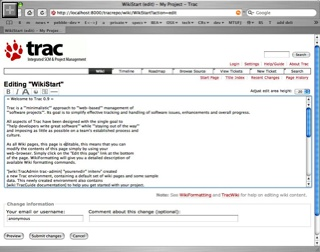

試合は7:30 開始でだいたい 9:30 くらいに終わった。
眠いので部屋に戻って一休みしてからLas Vegas Premium Outletへ。
ラスベガス内は、去年はなかったっぽい the Deuce って二階建てバスが走っていて便利になった。10月27日に運行開始したっぽい。
一人$5で２４時間乗り放題なので大変オススメ。
アウトレットはなかなかでかかった。といっても日本でよく行く佐野のアウトレットとそれほど規模は変わらないかな？
アディダスで靴を買い、駒沢でボロボロのドロドロになっていた靴から履き替えた。
他には妻の希望で台所用具をタンマリ購入。おいしいお菓子作ってください。
夜は事前に予約してあった O を見るため Bellagio へ行った。
will call なので Bellagio の box office でチケットをピックアップして、減りまくりの腹をなだめるためそのままバッフェへ。
ここはなんといってもカニが良かった！去年 Rio で食べたカニはあまり食べさせたくないのか、ややしょっぱく茹でてあったけど、Bellagio のはそこそこイケる。
身もとりやすいように全て半分に割ってあるしでとにかく食べまくった。
ベラージョのバッフェでカニを食べまくり
しかし寿司はイマイチ。
rice ball machine とかいう機械でニュルニュルっと米が押し出され、一列に並べた握りの上にネタをペケペケと人間が貼り付けていく感じで見た目にもまずそう。握り（握ってないけど）が固すぎ。
もひとつイマイチなのはなんと松阪牛。
記憶の限り松阪牛たべたことはないけれども、ジューシーな割にはなんだか固く、ぶっちゃけおいしくない。
焼き方が良くないのか、偽物なのか知らないが、オススメしない。
デザートはケーキ、フルーツが大量にあり大満足！
たらふく食べたあとは O のシアターへ。
O はラスベガスでも一番人気のあるショーで、過去に訪問した際はチケットが取れなかった。
今回はさすがに２週間前くらいに予約したけど、それでも一番安い(=見にくいシート)チケットしかとれなかった。
ショーの内容はサーカスとシンクロナイズドスイミングを合わせたようなもの。
なかなか良かった。
でも妻も私も去年見た Blue Man Groupの方が好み。
待望のO
試合は7:30 開始でだいたい 9:30 くらいに終わった。
眠いので部屋に戻って一休みしてからLas Vegas Premium Outletへ。
ラスベガス内は、去年はなかったっぽい the Deuce って二階建てバスが走っていて便利になった。10月27日に運行開始したっぽい。
一人$5で２４時間乗り放題なので大変オススメ。
アウトレットはなかなかでかかった。といっても日本でよく行く佐野のアウトレットとそれほど規模は変わらないかな？
アディダスで靴を買い、駒沢でボロボロのドロドロになっていた靴から履き替えた。
他には妻の希望で台所用具をタンマリ購入。おいしいお菓子作ってください。
夜は事前に予約してあった O を見るため Bellagio へ行った。
will call なので Bellagio の box office でチケットをピックアップして、減りまくりの腹をなだめるためそのままバッフェへ。
ここはなんといってもカニが良かった！去年 Rio で食べたカニはあまり食べさせたくないのか、ややしょっぱく茹でてあったけど、Bellagio のはそこそこイケる。
身もとりやすいように全て半分に割ってあるしでとにかく食べまくった。
ベラージョのバッフェでカニを食べまくり。手前は一見ウマそうな松阪牛
しかし寿司はイマイチ。
rice ball machine とかいう機械でニュルニュルっと米が押し出され、一列に並べた握りの上にネタをペケペケと人間が貼り付けていく感じで見た目にもまずそう。握り（握ってないけど）が固すぎ。
もひとつイマイチなのはなんと松阪牛。
記憶の限り松阪牛たべたことはないけれども、ジューシーな割にはなんだか固く、ぶっちゃけおいしくない。
焼き方が良くないのか、偽物なのか知らないが、オススメしない。
デザートはケーキ、フルーツが大量にあり大満足！
たらふく食べたあとは O のシアターへ。
O はラスベガスでも一番人気のあるショーで、過去に訪問した際はチケットが取れなかった。
今回はさすがに２週間前くらいに予約したけど、それでも一番安い(=見にくいシート)チケットしかとれなかった。
ショーの内容はサーカスとシンクロナイズドスイミングを合わせたようなもの。
なかなか良かった。
でも妻も私も去年見た Blue Man Groupの方が好み。
待望のO
今日は試合本番1日目。
朝7:30〜ということで6:30くらいに起きて眠い目をこすって会場へ。
張り出されている的番を確認して、Gene に言われた通り上側に的を張る。
同的は細身と太身の女子高生（？）とノボっとした大学生っぽいの。
ノボっとしたのは試射で立ちを間違えて初回一的三人立つハメになった。
全日ターゲットじゃないっつーの。
的紙を貼り終えたトコ。眠そう
妻も指摘していたけど同立ちだった子は名前が KUCHENBROD と、ドイツっぽい。
聞いてみれば祖父がドイツ人だとのこと。
でもドイツ語はしゃべれず、第二外国語で習っているけれども苦手。
見た目じゃわからんけど、そういうのアメリカにはゴロゴロしてるのかね？Geneも何代前かにドイツ人がいるとか言ってた。
ドイツ語が堪能な妻によると KUCHENBROD はケーキ-パンの意だそうで、我々の中では勝手にケーキパンちゃんというあだ名で呼んでいた。
ケーキパンと私
日本でいつもやってる試合とちょっと違う点をいくつか
・下の的をうつほうが常に先立ち
AB-CD->CD-ABじゃなくて、CD-AB->CD-AB・・って感じ。
・５エンドで上下的を入れ替え
つまり的紙を上に貼ったら試射を含めて７回連続後立ちで上をうつ。
的紙を貼り替えて、５回連続先立ちで下をうつ。
・スコアの修正はスコアラーができる
ケーキパンはなんと鉛筆でスコアを書いていた。
・点数のコールは英語で(当たり前！)
小計は 21 - twenty one、累計は 108 - one o five、230 - two tirty てな感じで読むみたい。流でスコアリングを担当するハメになった。
点数コールを聞き間違えることもなく、確認の読み上げの発音が悪くて聞き直されることなく思ったよりスムース。
結果の方はというと・・最近の調子通り、試合になるとタイミングがくずれまくりダメダメ。うーむ。
なんだかカッコイイショット by 妻
Apache と連携する前にとりあえず動かしてみた。
trac 付属のシンプルな Web サーバで動かすには
$ tracd --port 8000 /Users/yusukey/tracrepoとするだけ。

{kind=link}
trac 付属 Web サーバで動いてるとこ
$ mkdir svn
$ svnadmin create /Users/yusukey/svn
$ trac-admin tracrepo initenv
Creating a new Trac environment at /Users/yusukey/tracrepo
Trac will first ask a few questions about your environment
in order to initalize and prepare the project database.
Please enter the name of your project.
This name will be used in page titles and descriptions.
Project Name [My Project]>
Please specify the connection string for the database to use.
By default, a local SQLite database is created in the environment
directory. It is also possible to use an already existing
PostgreSQL database (check the Trac documentation for the exact
connection string syntax).
Database connection string [sqlite:db/trac.db]>
Please specify the absolute path to the project Subversion repository.
Repository must be local, and trac-admin requires read+write
permission to initialize the Trac database.
Path to repository [/var/svn/test]> /Users/yusukey/svn
Please enter location of Trac page templates.
Default is the location of the site-wide templates installed with Trac.
Templates directory [/sw/share/trac/templates]>
Creating and Initializing Project
Configuring Project
trac.repository_dir
trac.database
trac.templates_dir
project.name
Installing default wiki pages
/sw/share/trac/wiki-default/CamelCase => CamelCase
/sw/share/trac/wiki-default/RecentChanges => RecentChanges
/sw/share/trac/wiki-default/SandBox => SandBox
/sw/share/trac/wiki-default/TitleIndex => TitleIndex
/sw/share/trac/wiki-default/TracAccessibility => TracAccessibility
/sw/share/trac/wiki-default/TracAdmin => TracAdmin
/sw/share/trac/wiki-default/TracBackup => TracBackup
/sw/share/trac/wiki-default/TracBrowser => TracBrowser
/sw/share/trac/wiki-default/TracCgi => TracCgi
/sw/share/trac/wiki-default/TracChangeset => TracChangeset
/sw/share/trac/wiki-default/TracEnvironment => TracEnvironment
/sw/share/trac/wiki-default/TracFastCgi => TracFastCgi
/sw/share/trac/wiki-default/TracGuide => TracGuide
/sw/share/trac/wiki-default/TracImport => TracImport
/sw/share/trac/wiki-default/TracIni => TracIni
/sw/share/trac/wiki-default/TracInstall => TracInstall
/sw/share/trac/wiki-default/TracInterfaceCustomization => TracInterfaceCustomization
/sw/share/trac/wiki-default/TracLinks => TracLinks
/sw/share/trac/wiki-default/TracLogging => TracLogging
/sw/share/trac/wiki-default/TracModPython => TracModPython
/sw/share/trac/wiki-default/TracNotification => TracNotification
/sw/share/trac/wiki-default/TracPermissions => TracPermissions
/sw/share/trac/wiki-default/TracPlugins => TracPlugins
/sw/share/trac/wiki-default/TracQuery => TracQuery
/sw/share/trac/wiki-default/TracReports => TracReports
/sw/share/trac/wiki-default/TracRoadmap => TracRoadmap
/sw/share/trac/wiki-default/TracRss => TracRss
/sw/share/trac/wiki-default/TracSearch => TracSearch
/sw/share/trac/wiki-default/TracStandalone => TracStandalone
/sw/share/trac/wiki-default/TracSupport => TracSupport
/sw/share/trac/wiki-default/TracSyntaxColoring => TracSyntaxColoring
/sw/share/trac/wiki-default/TracTickets => TracTickets
/sw/share/trac/wiki-default/TracTicketsCustomFields => TracTicketsCustomFields
/sw/share/trac/wiki-default/TracTimeline => TracTimeline
/sw/share/trac/wiki-default/TracUnicode => TracUnicode
/sw/share/trac/wiki-default/TracUpgrade => TracUpgrade
/sw/share/trac/wiki-default/TracWiki => TracWiki
/sw/share/trac/wiki-default/WikiDeletePage => WikiDeletePage
/sw/share/trac/wiki-default/WikiFormatting => WikiFormatting
/sw/share/trac/wiki-default/WikiHtml => WikiHtml
/sw/share/trac/wiki-default/WikiMacros => WikiMacros
/sw/share/trac/wiki-default/WikiNewPage => WikiNewPage
/sw/share/trac/wiki-default/WikiPageNames => WikiPageNames
/sw/share/trac/wiki-default/WikiProcessors => WikiProcessors
/sw/share/trac/wiki-default/WikiRestructuredText => WikiRestructuredText
/sw/share/trac/wiki-default/WikiRestructuredTextLinks => WikiRestructuredTextLinks
/sw/share/trac/wiki-default/WikiStart => WikiStart
Indexing repository
---------------------------------------------------------------------
Project environment for 'My Project' created.
You may now configure the environment by editing the file:
/Users/yusukey/tracrepo/conf/trac.ini
If you'd like to take this new project environment for a test drive,
try running the Trac standalone web server `tracd`:
tracd --port 8000 /Users/yusukey/tracrepo
Then point your browser to http://localhost:8000/tracrepo.
There you can also browse the documentation for your installed
version of Trac, including information on further setup (such as
deploying Trac to a real web server).
The latest documentation can also always be found on the project
website:
http://projects.edgewall.com/trac/
Congratulations!
機能的にはよさげだけどもアーキテクチャが java じゃなくて導入をためらっていた Trac。
どうやら fink を使うと簡単にインストールできるそうなので試してみた。
参考サイト:
Trac - Installing With Fink
まず fink を最新版に更新。
各種パッケージをダウンロードするのにどのミラーサイトを使うか尋ねられるけど全部デフォルトのままで enter を押しまくった。
$ fink selfupdate
rsync -az -q rsync://master.us.finkmirrors.net/finkinfo//TIMESTAMP /sw/fink/TIMESTAMP.tmp
I will now run the rsync command to retrieve the latest package descriptions.
---------------snip-------------
The core packages have been updated. You should now update the other packages using commands like
'fink update-all'.
SQLite をインストール
$fink install sqlite sqlite-dev sqlite-shlibs
---------------snip-------------
Setting up sqlite-shlibs (2.8.5-13) ...
Setting up sqlite-dev (2.8.5-13) ...
Setting up sqlite (2.8.5-13) ...
Subversion をインストール
$fink install svn-ssl svn-client-ssl svn-ssl-swig-py23
---------------snip-------------
If any of the above dpkg error messages mention conflicting packages or missing dependencies --
for example, telling you that the package fink-buildlock-python24-1:2.4.1-102 conflicts with
something else -- fink has probably gotten confused by trying to build many packages at once. Try
building just this current package python24 (i.e, "fink build python24"). When that has completed
successfully, you could retry whatever you did that led to the present error.
Regardless of the cause of the lock failure, don't worry: you have not wasted compiling time!
Packages that had been completely built before this error occurred will not have to be recompiled.
Failed: buildlock failure
10時間くらいかかった挙げ句なんか失敗してる。Mac OSX 10.4 に入ってる phthon 2.3 を指定したのになぜ 2.4 周りで失敗？
っという疑問は放置したまま言われるがまま python24 をビルドしてみる
$ fink build python24
Selecting previously deselected package blt-dev.
(Reading database ... 17688 files and directories currently installed.)
Unpacking blt-dev (from .../blt-dev_2.4z-12_darwin-powerpc.deb) ...
Setting up blt-dev (2.4z-12) ...
で、もう一度 Subversion インストールを挑戦。
$ fink install svn-ssl svn-client-ssl svn-ssl-swig-py23
---------------snip-------------
Selecting previously deselected package svn-ssl-swig-py23.
(Reading database ... 31996 files and directories currently installed.)
Unpacking svn-ssl-swig-py23 (from .../svn-ssl-swig-py23_1.2.3-12_darwin-powerpc.deb) ...
Setting up svn-ssl-swig-py23 (1.2.3-12) ...
ようやく Subversion をインストールできたっぽい。
一応最新版になってるか試してみろ、とのことなので update-all
$ fink update-all
Password:
Information about 2000 packages read in 2 seconds.
No packages to install.
特にアップデートされることはなし。
で、いよいよ trac をインストール。
$ fink install trac-py23
Information about 2000 packages read in 1 seconds.
Failed: no package found for specification 'trac-py23'!
見つからない・・。
調べてみたら、unstable パッケージなんだよと。
Re: trac installation failure on mac os X
fink.confを書き換えて Trees: ってとこに unstable/main unstable/crypto というおまじないを加えると unstable が検索対象になるらしい。
Q5.8: There's this package in unstable that I want to install, but the fink command just says 'no package found'. How can I install it?
$ sudo vi /sw/etc/fink.conf
Password:
# Fink configuration, initially created by bootstrap.pl
Basepath: /sw
RootMethod: sudo
Trees: local/main stable/main stable/crypto unstable/main unstable/crypto
Distribution: 10.4-transitional
Mirror-apt: http://bindist.finkmirrors.net/bindist
Mirror-cpan: ftp://ftp.funet.fi/pub/languages/perl/CPAN/
Mirror-ctan: ftp://tug.ctan.org/tex-archive/
Mirror-debian: http://ftp.debian.org/debian/
Mirror-gimp: ftp://ftp.gimp.org/pub/gimp/
Mirror-gnome: ftp://ftp.gnome.org/pub/GNOME/
Mirror-gnu: ftp://ftp.gnu.org/gnu
Mirror-kde: ftp://ftp.kde.org/pub/kde/
Mirror-master: http://distfiles.master.finkmirrors.net/
Mirror-rsync: rsync://master.us.finkmirrors.net/finkinfo/
Mirror-sourceforge: http://west.dl.sourceforge.net/sourceforge/
MirrorContinent: nam
MirrorCountry: nam-us
MirrorOrder: MasterFirst
ProxyPassiveFTP: true
UseBinaryDist: true
Verbose: 1
SelfUpdateMethod: rsync
Mirror-apache: http://www.apache.org/dist
で、なにやら fink のパッケージ情報を更新して、
fink selfupdate; fink index; fink scanpackages
もう一度インストールをお願いしたら完了。
$ fink install trac-py23
おまじないだらけでイマイチ意味分かってないけどとりあえずインストールできたっぽい。
次は Subversion のリポジトリ作成。
Pebbl 2.0 をリリースするらしい。
Pebble 2.0 - Pebble 2.0 is alive
あまり動きがなくて興味を失っていたのではないかと心配していたけど、裏でコソコソと作ってたらしい。ニクい！
主な違いは以下の通り。今週末を目処にリリースするとのこと。
・新しい標準ベース
J2SE5.0 / JSP 2.0 / Servlet 2.4 ベースで今まで以上に軽快に動作するとのこと。
また、 JSP2.0 の EL をつかってかなりシンプルに記述できているらしい。
・新しいセキュリティ機構
Acegi security system for Spring(何それ?)を使って、シンプルかつ拡張性の高いセキュリティ機構をもっているとのこと。
確かに J2EE のロールベースだと、 Tomcat とかで動かしている場合はユーザのメンテナンスとか大変そう。
自宅サーバで使っているぶんにはそうそうユーザのメンテナンスはしないのであまり関係ないかな。
・新しいユーザインターフェース
恐らく管理画面が変わるんでしょう？
しかし、WebLogic Free Edition で動かなくなるのは悩ましい。4.x 以降ほとんど触っていない Tomcat をインストールするか・・・。
#Free Edition は J2EE1.3 ベースの WLS8.1 のみ。WLS9.x は scale-limited license がない
最初のコンピュータと言われている ENIAC の貴重な映像。
CNET Japan - 「これがENIACだ」
当初軍事用途向けに開発されたことは知っていたけど、１０進数で計算していたというのは知らなかった。興味深い。
モダンなコンピュータより人間味がある？